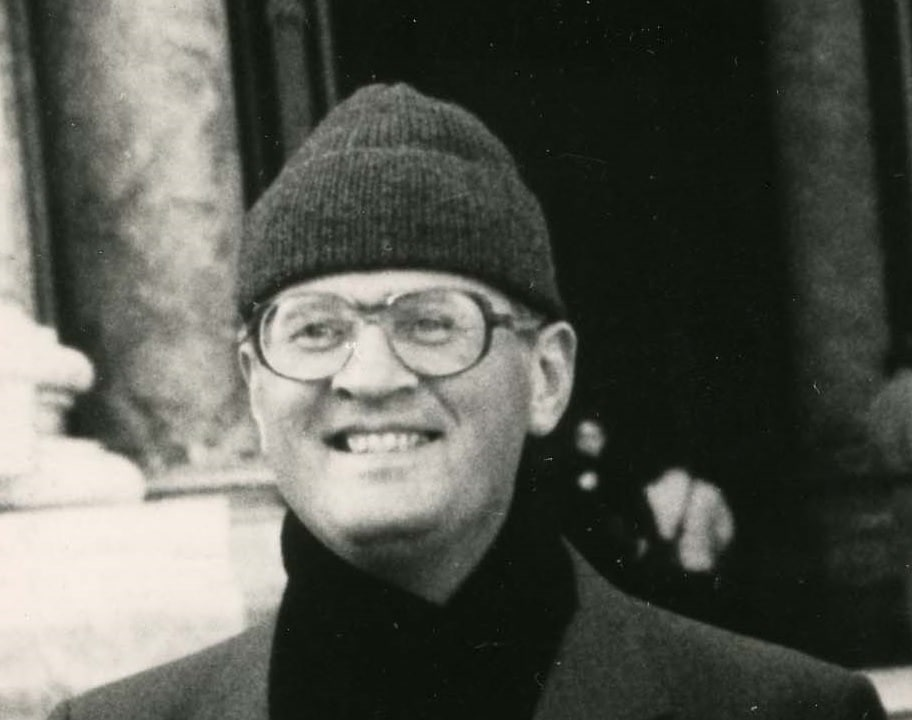
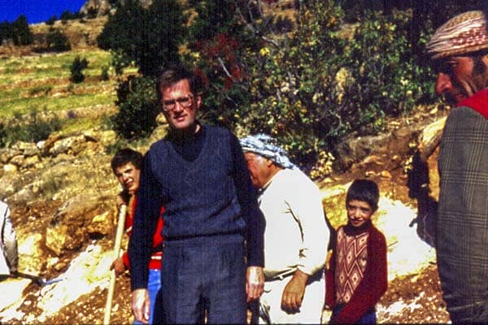
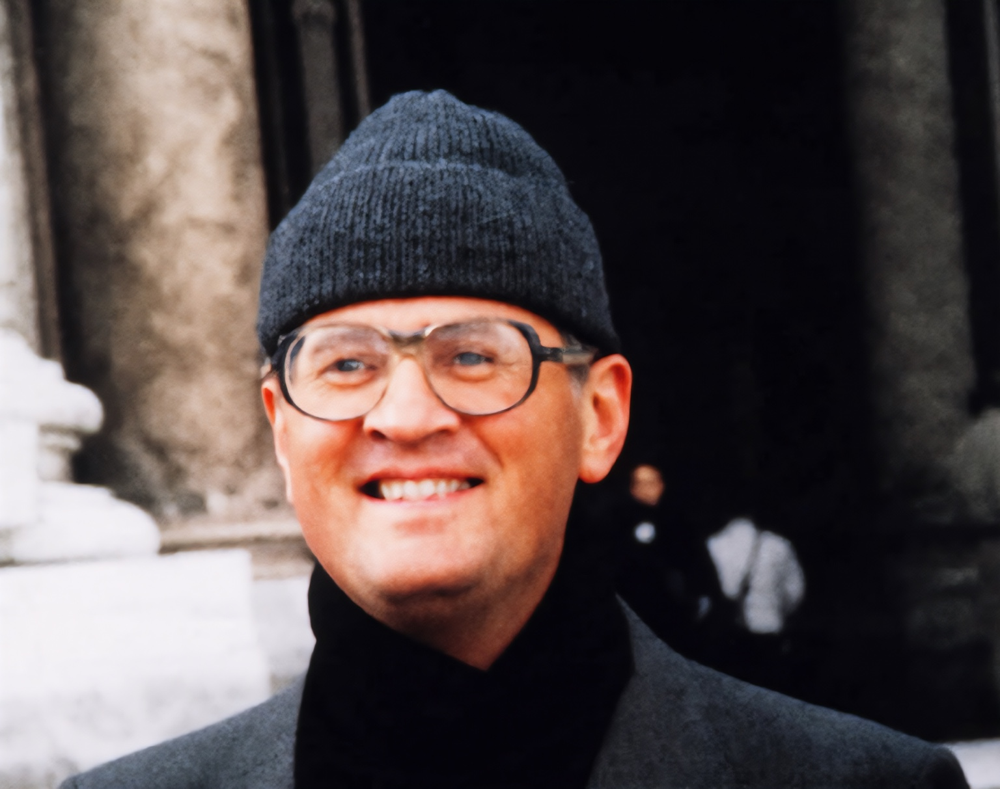
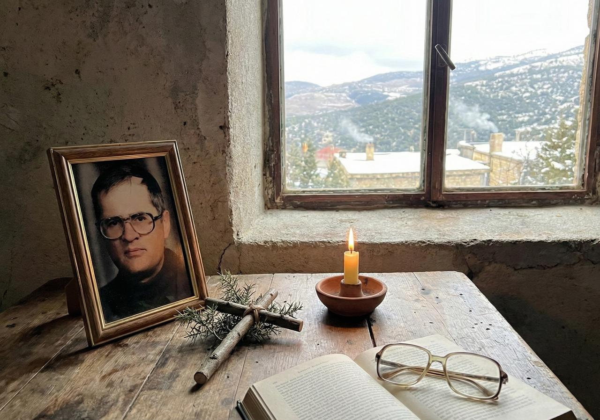

Les images historiques ci-dessous figurent dans le reportage 2025 de Nidaa Al Watan, qui en attribue plusieurs à l’Archive de Barqa. Elles sont chargées depuis le serveur du journal et liées à l’article original ; elles ne sont pas copiées dans ce dépôt. Les droits restent à leurs propriétaires ou à l’éditeur. Les noms des photographes, dates et licences peuvent être ajoutés s’ils sont connus.
Les images « projet » sont les cinq fichiers fournis avec le site. Nous n’avons pas les informations de photographe ou de date pour chaque fichier.







Distinctions visuelles : le portrait colorisé est une restauration numérique, non une photographie couleur originale. L’œuvre commémorative est contemporaine, pas une scène historique. Aucune image générée par IA n’est présentée comme archive.